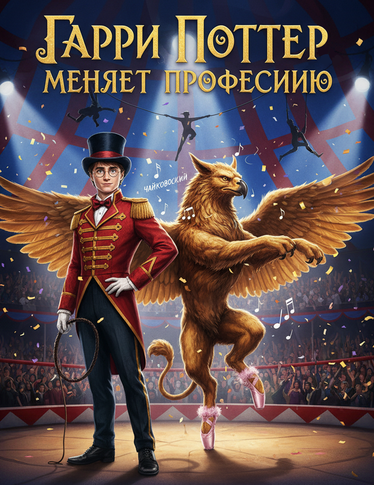

Погрузитесь в удивительный мир, где магия обрела новое, причудливое измерение. Гарри Поттер, сменивший волшебную палочку на хлыст циркового укротителя, стоит под светом софитов на арене, затаив дыхание. Перед ним, исполняя изящные балетные па-де-де, парит гигантский грифон — могучее существо с орлиным клювом и львиной гривой, чьи движения полны неожиданной грации под чарующие звуки музыки Чайковского.
Это зрелище одновременно величественное и абсурдное, завораживающее зрителей в магическом цирке, который ломает все привычные представления. Дополняет эту сюрреалистичную картину нежная деталь — мощные лапы мифического зверя обуты в пушистые розовые пуанты, подчеркивая хрупкий баланс между силой и изяществом. Здесь нет места темным угрозам или битвам за судьбу мира, только тихая магия момента, где укротитель и грифон вместе творят настоящее чудо.